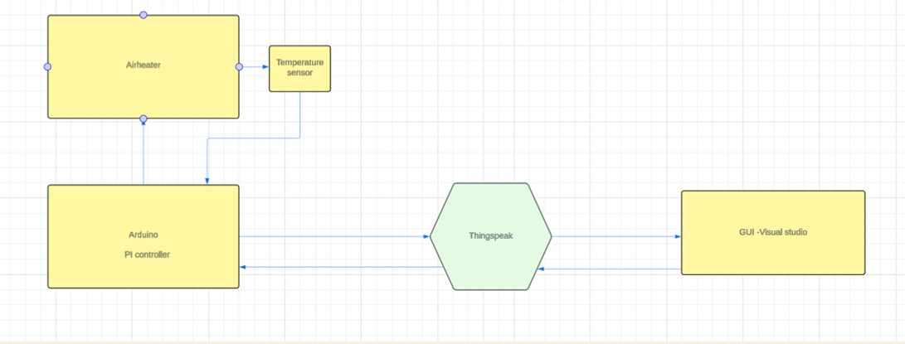
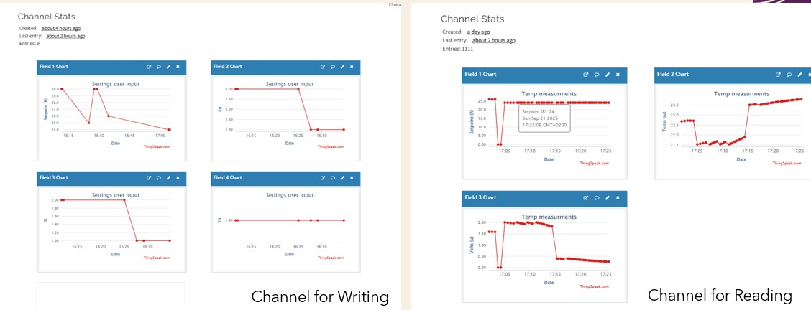
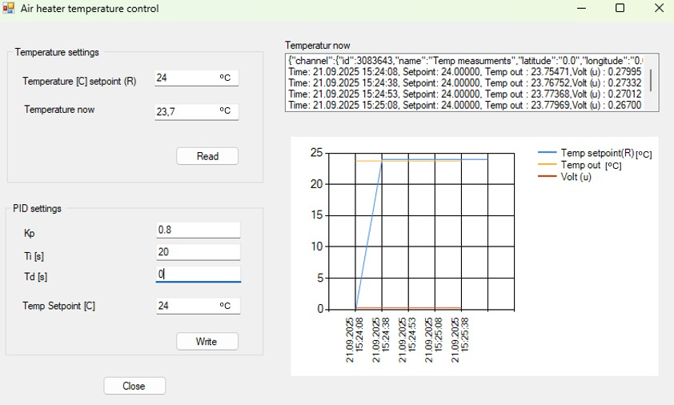

This air heater system is designed to be easy to use and cost-effective in both the short and long term, as it controls the air heater in real time.
The control of the air heater is fully automated, making it suitable for all types of customers. A PI controller is used to adjust the air heater
to the desired temperature without any effort from the customer.
System description
Here is an overview of the system
The Arduino is connected to the air heater and controls it using a PI controller. A temperature sensor is used to continuously monitor the temperature.
Through a GUI application, the customer can adjust the temperature setpoint. The PI controller adjusts the input to the air heater until the
setpoint temperature is reached. Communication and data flow between the GUI and the air heater are handled through ThingSpeak, which reads and writes
data to and from the Arduino and the Visual Studio GUI.
Reading and writing channels in Thingspeak as showen in next figure :
Here is an overview of the system
The following table is showing the results of temperature controlling from a demo as the setpoint temperature sett by the customer increased or decreased
| Time | Setpoint Temperature [°C] | Temperature now [°C] |
|---|---|---|
| 14.12.2025 10:30:00 | 25 | 25 |
| 14.12.2025 13:00:00 | 30 | 25 |
| 14.12.2025 13:25:00 | 30 | 30 |
| 14.12.2025 14:25:00 | 27 | 30 |
| 14.12.2025 15:25:00 | 27 | 27 |
Here you can find more information about our product:
More details